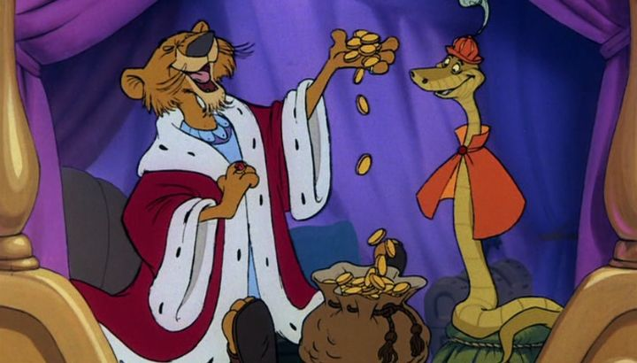

Following suit with Disney's other releases of the time, 1973's "Robin Hood" is an fun and lighthearted adaption of the classic medieval fantasy, as told with talking animals. This is also the first Disney movie to go all in on anthropomorphic animals: there's no humans in this movie, only foxes, bears, badgers, lions and so on, talking and wearing clothing. The opening credits even list each character's animal type (as well as their actor), and some of them share voice and personality traits from previous movies (Sir Hiss is much like Kaa from "The Jungle Book," Little John is like Baloo, some dogs out of "The Aristocats," etc.). It's fun to imagine that prior Disney characters are serving as actors in this new movie! The idea of human-like-animals had been played with in some prior movies ("The Adventuers of Ichabod and Mr. Toad" being the best example), and Disney has been known for this stylistic choice ever since the studio's inception, but there were always humans involved with the story too, which was a bit distracting. This is the purest example yet, and I think this does a lot in favor of the movie's charm (not to mention this is probably a "furry"-fan's go-to animated film). While Robin Hood, Little John, Maid Marian and the rest are all classic characters, the exact story of Robin's adventures vary between adaptations, so the movie ought to be fresh for new viewers. A good thing too, since by the time this movie released, Robin had already become one of the most adapted characters in film, including a live-action movie from Disney in 1952. This version covers some of the major scenes the character is known for, in a much more child-friendly light, of course. Introduced with narration by Alan-a-Dale (a rooster minstrel, who's also a side-character in the story), and with opening titles that list all of the characters (and their animal type, plus their actor), the story is about the kingdom of Britain, ruled by Prince John (not to be confused with Little John) in the absence of King Richard. The Prince, and his advisor, Sir Hiss (whom the Prince uses as a punching bag rather than listening to), tax the people out of greed and glee. It's up to the heroes, Robin Hood and Little John, to rob the rich to give back to the poor. The duo hide in Sherwood Forest as bandits, with some allies in the town of Nottingham (there's isn't a band of Merry Men in this movie, as the cast would have been too large). Their antics work for some time, with Robin's robberies getting more bold, but he pines for Maid Marian, a Princess in the castle that he grew up with as a child. As long as he's a thief, there seems no way for them to be together, let alone to confess his love. Prince John is also increasingly eager to catch Robin once and for all, and begins setting traps to lure him out (an archery contest for example, since Robin is known to be the best bow-and-arrow in the land), and isn't above taxing his people to starvation to get him. In other movies, Robin Hood is known for some spectacular and classic action sequences, be it with a bow and arrow or a sword, fighting one man or a hundred. You might think Disney would skimp on the swashbuckling for a kids movie, but on the contrary - this was their most action-packed movie yet! A lot of it is played for laughs of course, such as the many chase sequences that get increasingly silly, but there are genuine moments of exciting and clever thrills too, some of which rival the best action moments from live-action adaptions.  I have to point out what a charming lead Robin is, as a handsome fox voiced by Brian Bedford. He's given a notably British accent, and when paired with Little John for some witty and natural banter, it feels at home to other leads that have played Robin Hood before and since. And he and Maid Marian remain one of Disney's best romantic pairs, thanks to both having been childhood friends that equally pine for each other, and for Marian not being a "sleep-waiting-for-True-Love's-first-kiss" damsel in distress. The movie actually gives a chance for Marians to show a fun personality, which was novel for Disney at the time. Like other Disney movies of the era, the villains are written to be comic-relief as much as they are a threat. Prince John in particular is hilariously self-centered and incompetent, with a recurring joke about his mommy-issues and tendancy to suck his thumb. Sir Hiss and a portly wolf playing the Sherrif of Nottingham are just a little smarter (and like the good guys, sometimes make fun of their boss), but also often foiled. This isn't to say that none of them pose a threat, and Prince John becomes increasingly more dangerous as he gets desperate and angry. The imagry of cute dogs and bunnies and racoons starving due to their poverty, and being locked in chains for not paying taxes, is a very sad sight. Even though the payoff of Robin stealing hundreds of bags of gold coins, one after the other, helps a bit.Young children might get the message that all taxes are bad, which is maybe an issue for adults to explain. Of course, taxes can be a good thing, but the issue in Robin Hood's stories is that people are over-taxed beyond their income (with none of the riches being used to benefit the people), and brought people to the brink of starvation. Which has occurred in real history, either for greed or deliberate attempts to starve entire nations to death. But it's important to distinguish the two, otherwies a child might grow up not wanting to pay a penny in income tax for the wrong reasons. As fun as "Robin Hood" is, there's the glaring issue of a low production quality, like most of Disney's other movies from the 60's and 70's. Character designs are great, but most of them are borrowed from prior Disney movies. Character animation is good, but there are some obvious re-using of shots and animation errors to cut costs. After watching all of Disney's movies in order, back to back, I can't help but yearn for the high standard that came from movies like "Sleeping Beauty" and "The Lady and the Tramp." Otherwise, the voice acting is great (even if frequent Disney actors are reused again), and the music is charming and memorable, ranging from roaring sing-a-longs ("The Phony King of England") and quieter ballads ("Oo-De-Lally," "Not in Nottingham"), and classic non-vocal scores (I'd recognize the "Whistle Stop" theme in an instant). At this point, the pattern of fun, but low-budget, animated movies from Disney was getting a little long in the tooth. But I admit "Robin Hood" is one of the most fun yet, and is one of my favorites growing up on the VHS tapes. Most importantly, it does the character justice, and is a decent way to introduce Robin's adventures to families young and old.
- "Ani" More reviews can be found at : https://2danicritic.github.io/ Previous review: review_Ringing_Bell Next review: review_Robot_Carnival